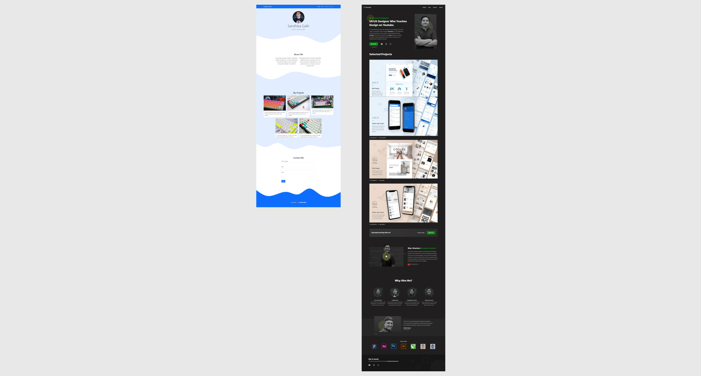
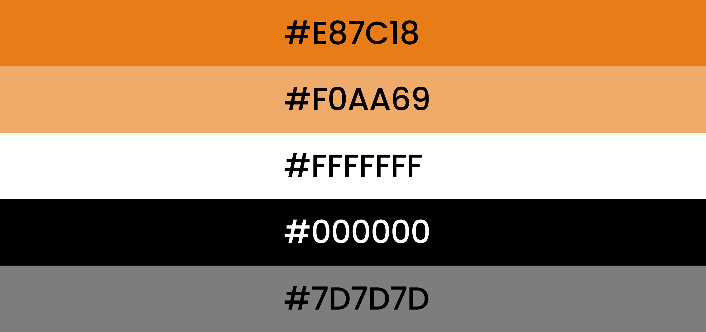
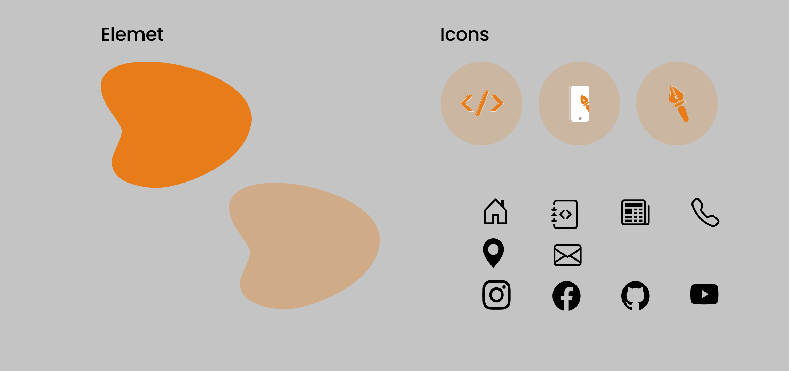

Widanta, Desain Ulang Website Portfolio

Portfolio Web Project
Story
Web Widanta.github.io pertama kali aku buat pada februari 2021. Dengan tampi User Interface yang sederhana. Tampilan web yang belum interaktif. Banyak tampilan icons buttons yang kurang porposional. Kombinasi warna yang kurang tepat. Dan masih banyak kekurangan lainnya. Akhirnya pada bulan Juni Aku putuskan untuk membuat ulang, mulai dari tampilan Web dan Management coding.
Process
Inspirasi Website
Inspirasi Website
Website yang saya buat terinspirasi dari Web Sandhika Galih.github.io & KukuhAldy.com. Yang saya lihat dari Chanel Youtube beliau Web Programing UNPAS & Mas KukuhAldy. Dari ilmu yang saya dapatkan dari Chanel beliau. Saya gabungkan menjadi sebuah website yang saya gunakan sekarang.
Kombinasi Warna
Kombinasi Warna
Ada tiga warna penting yang saya kombinasikan di dalam website saya. Yaitu orange hitam & abu - abu. Orange adalah warna utama dalam website yang saya buat. Warna hitam saya gunakan untuk memberikan aksen tebal dalam teks. Sedangkan abu - abu biasanya saya gunakan dalam paragraf. Agar memberikan kesan kontras terhadap teks yang kita baca. Dan supaya mudah untuk membedakan yang mana judul dan paragraft.
Icons Website
Icons Website
Ada tiga icons penting dalam website saya. Yang dimana ada icon yang menggambarkan Web Development, Ui Designer & Graphic Designer. Icon tersebut saya buat sendiri. Yang pilosopi dari icons tersebut ada Web Development saya menggunakan ilustrasi sebagai yang khas digunakan dalam coding,Ui designer saya menggunakan ilustrasi pentools dan mockup mobile dan graphic designer saya menggunakan ilustrasi pentools. Sedangkan icon yang lainnya adalah pelengkap yang saya dapat dari official Bootstraps icons.
After & Before
Jumbotron Section

Old Project
New Project
Fiture Section


Old Project


New Project
Result
New Design Web Porfolio